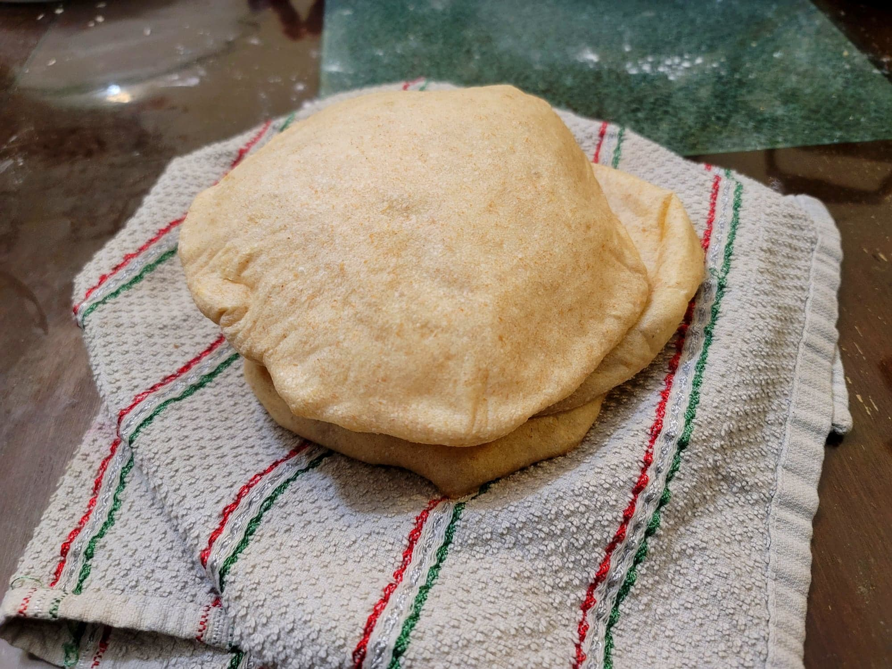

Pita

Ingredients:
- 1 cup (240 ml) Water, warm
- 1 tbsp (15 ml)Olive oil + more as needed
- 1 tbsp (13 g) Sugar
- 2 1/4 tsp (7 g) Instant yeast
- 1 tsp (3 g) Salt
- 1/2 cup (70 g) Whole wheat flour
- 2 cups (280 g) Flour
Instructions:
- Combine all ingredients into a large bowl. Knead with your hands for about 10 minutes or with a stand mixer on low for about 8 minutes. The dough should become smooth and elastic.
- Form the dough into a taut ball. Transfer to a large sealable container greased with some olive oil. Cover and let rise for about 1 hour or until doubled in size.
- Preheat a baking steel or cast iron skillet in an oven to 500 degrees Fahrenheit. Prepare a serving plate lined with a towel.
- Divide the dough into 6 even pieces and form each one into a taut ball. Cover with a tea towel and let rest for 10 minutes.
- Flatten each dough ball into about a 7 inch circle. Each one must be less than 1/4 inch thick. Cover and let proof for another 30 minutes.
- In batches, place as many pita as will fit into the oven. Work quickly as to not let the oven cool down. Let bake for 3 minutes. Then transfer the pita to the towel lined plate and wrap with the towel. Repeat with the rest of the dough, making to sure to check between batches that the temperature of the oven is back to 500 degrees Fahrenheit.
- Optionally, heat cast iron skillet over high heat. One at a time, place the pita onto the skillet for about 30 seconds per side to add some char. Then return to the towel and cover.
- Serve immediately.